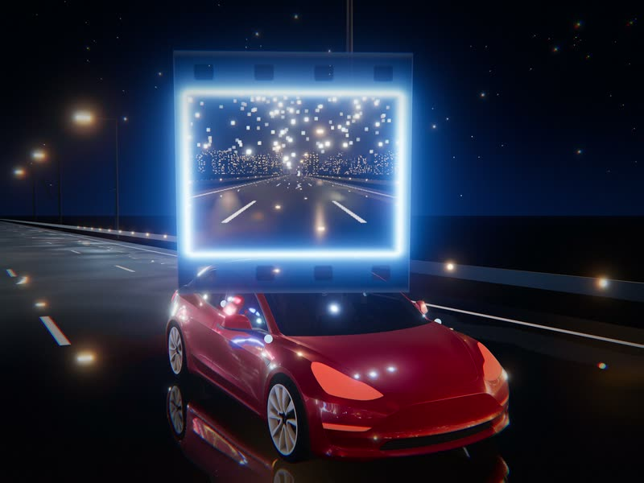
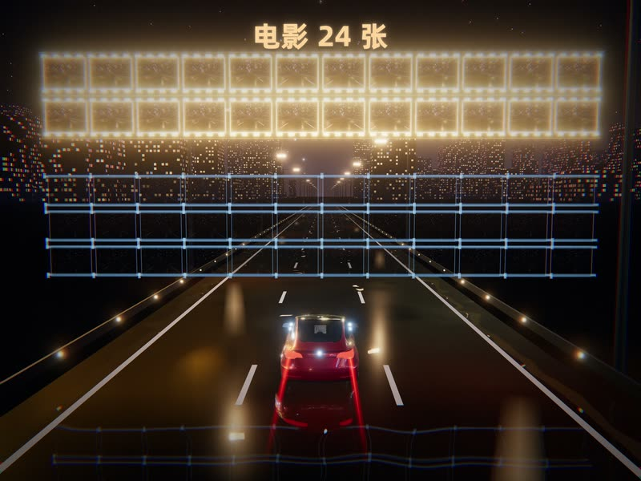
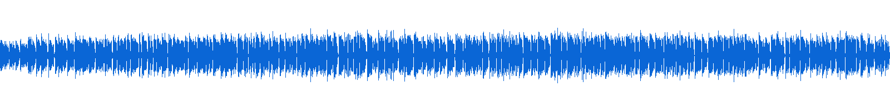
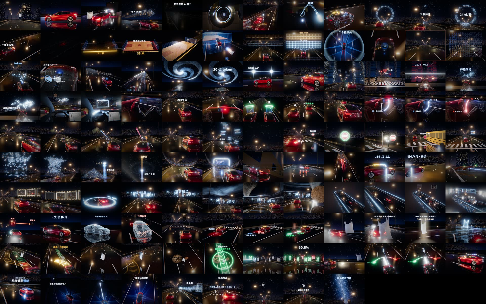

立项、事实卡、初稿

- 上期评论区又有人问「1 秒 1 帧的话，智能驾驶怎么办」，我说继续做
- 两个子 agent 同时查事实卡：帧率与训练、塑料袋与长尾
- Gemini 4 Argon 写出 v1；查了 YouTube，没有专讲这个的
成片《智驾是如何看视频的》，9 分 50 秒，4:3。这期没有我露脸的画面：两次录音摄像头都没进录制软件，只录到了声音。画面全是代码写的 3D——雨后夜路、一辆红车、一个塑料袋。10-27 凌晨 00:56 我给 Claude Code 定下目标，它派了 37 个 agent，06:01 交片，这中间我一条消息没发。
按对话记录和工作日志排出来。前九天在磨稿子和录音，画面是 10-27 一个晚上做出来的。



稿子靠事实卡兜底：三张事实卡由子 agent 查，主会话逐条打开原文核。最后成片说的话和 v10 还有 28 处不同，录音时我又换了一些说法，成片字幕按我实际说的写。
按两张事实卡写初稿，8 段约 7.5 分钟
按我的意见加回「树枝 vs 转向灯」，27 句改说法
删到约 2,000 字，开头直接讲塑料袋追尾
我要「用最新的技术去讲」，按第三张事实卡重写
修核对挑出的 7 处事实偏差
只删原句，约 3,850 → 3,100 字
拔掉「第一站…第六站」这种报站腔
合入我在 v6 里勾的 11 句
只修 4 处小问题，开头逐字保留
前三分之一照我实际录的整理，后三分之二照我的口气续写
全篇重录只有声音。剪辑在达芬奇里：AI 通过脚本粗剪、染色、补气口，我在它染好色的时间线上删不要的话、听停顿。
定剪后的口播干声，9:49.6，17,688 帧，155 段。原录音约 0.8 秒超过 0 dB，达芬奇导出会把这些采样削平；AI 按剪点从原始录音重拼，只替换了 39,704 个被削平的采样，其余和达芬奇导出逐采样一致。
补气口：我问「标准的气口停顿是多少帧」，AI 先给全片统一 8 帧，我说要按「一句说完了」还是「卡壳停顿」分开判断。它把 138 处停顿逐个读前后文字归成上面五类再压或补；第一版留下很多 1–2 帧的碎片，我发现后它重剪了一版。我还说：别发判定表给我看，直接剪完，要我听的地方染色。
10-27 凌晨，我在一段新对话里给 Claude Code 定下目标，开了 max 档和工作流模式。到下午 13:58 我回来看片之前，这段对话里我没有再发一条消息。下面是它这一晚每条线在忙什么，按对话记录里的时间画出来。
时间取自对话和每个 agent 记录的首末时间，精确到分钟；悬停或聚焦色块看说明。12 段每段一个 agent，各在一份独立的工程副本里干活，交付后主会话再合回主工程。
主会话先读稿和时间表，搭工程（4:3、30 帧），再建所有段共用的 3D 世界：雨后夜路、红车、塑料袋、远处城市。第一次试渲一片白雾，它查出是镜头站进了车灯光锥。
12 段在搭的时候，它给共用的画面加了全局调色：路面黄绿色 3.4% → 0.6%，偏紫的像素压到 1.7%，再推给 12 份副本，让每段都在最终的色调上调。
做音效素材包的 agent 到 02:15 还没开始配乐，主会话把活拆开：它只管素材包（最后 132 个声音、37 类），另派一个专门配乐（Lyria 生成，D 小调 120 BPM，按画面重拍对位）。
按每段画面写音效点位，每段一个 agent，两三分钟写完。素材包里缺的声音（快门、转向灯、脚步、气刹……）它们会标出来，主会话再让做素材包的补。
主会话逐段看完，挑出最弱的镜头列成单子，派 7 个 agent 定点精修：只改造型、机位、质感，不改动作时间。
12 段渲完，帧数加起来正好 17,688。混音：配乐比人声低约 12 dB，压在字上的音效自动让开，整片 -15.0 LUFS。字幕 315 条。
按口播切成 12 段，切点都落在两句之间的停顿里。下面是成片里每段的一小截，以及搭这段的 agent 用了多久、操作几次、打开自己渲的图检查几次。蓝标的 7 段后来又精修过。全部是 three.js 代码写的 3D，在 Remotion 里逐帧渲，2880×2160 原生出图，没有用视频生成模型。

03:38 第一次写好交付说明后，它没有停，接着抽帧、量声音、查时间戳，又找出两个大错。下面都是这一晚它自己发现、自己修的。
10-27 下午我看完第一版。画面我觉得「很可以」，提了四处，都改了；开头运镜那一处，改了两次都不如原版，退回。
智驾的视频，我觉得画面是很可以，但是车不像一个特斯拉换成 Ameer Studio 的 Model 3 车模（CC BY 4.0，简介里署名），车标、车牌藏掉；车内镜头和 7 个摄像头按左舵重新对位。
同时地面的光效有点太多了，导致画面看起来很杂乱碎亮点是湿路倒影映了远处城市的窗户和星星。去掉，只留车和路灯的倒影，水纹调柔。
然后字幕是我之前的字体吗？我觉得不太对诶。换回之前在达芬奇里用的那套：普惠体粗体白字 + 半透明黑底框。
不对啊，这个克隆音完全不像，你只能用我当前视频的声音去克隆，不能用之前的Waymo 这个词我没读对。只用这条片的干声克隆，出了几版，我挑 B，补进 6:26.1–6:27.8 这 1.7 秒，其余采样不动。
开头是很好的很强的，我只是觉得镜头的移动有点快，我有点晕拆成 5 个镜头、把最快的速度砍一半，都试过。我说：「这不行，还不如之前的……你回到那一版吧。」最后：「就用已经导出的吧，发布一下。」
102 条消息里，很多是「打开我看看」「做吧」。真正改了片子的是下面这些。
智能驾驶的那个稿子，评论区又有人问，1秒1帧的话，智能驾驶怎么办？我觉得可以继续弄。立项。
用最新的技术去讲，最新的。应该是什么样子三个子 agent 查 2026 年新进展，重写 v4。
核对原文啊、主会话逐条打开原文核，出第三张事实卡。
我觉得这个 0.9 米不就 90 厘米吗？90 厘米在实际开车的过程中，它不是也很慢吗？我觉得是很慢的。删掉 0.9 米。我自己想到电影 1 秒 24 帧，换成「车看 36 张，比电影还多 12 张」。
在看看剩下的，所有的概念必须简单易懂。后三分之二改了 8 处说法，比如「世界引擎」改成「服务器上的虚拟世界」。
我还没有剪气口呢，我只是去掉了不要的话。然后我想挖深一点，标准的气口停顿是多少帧？按停顿类型定帧数，138 处逐个判。
要在另外的一个对话里面去完全自主地做这个视频剪辑那段对话里做的包装半成品删掉，另开一段对话从头自主做。
不对啊，这个克隆音完全不像，你只能用我当前视频的声音去克隆，不能用之前的只用本片干声克隆，我挑 B。
这不行，还不如之前的最开始取消镜头晃动之前的那一版，你回到那一版吧。开头运镜退回原版。
定好目标、开 max 档，它自己拆成 12 段、派 37 个 agent，做配乐的卡住了它会拆活，替换音效的 agent 不动了它会停掉自己做。我一条消息没发，早上就有成片。
39 秒定格、空音效轨、一百多帧路面闪烁，都是它交付前自己查出来的。车不像特斯拉、镜头看着晕、Waymo 读错，是我看片看出来的。
开头运镜我嫌快，拆镜头、改速度曲线都试了，都不如原版。直接用已经导出的那版发。
不是。全部是 three.js 代码写的 3D，在 Remotion 里逐帧渲出来，2880×2160 原生出图。车模是 Ameer Studio 的「Tesla 2018 Model 3」（CC BY 4.0），路人车是 Khronos 的「Car Concept」（CC-BY 4.0），环境光是 Poly Haven 的 CC0 HDRI。
Claude Code 主力是 Opus 5.5，包装那晚开的 max 档；立项、首录粗剪、重录粗剪三段对话用的是 Fable 5.1。稿子初稿和 4 轮改稿是 Gemini 4 Argon 写的，配乐是 Lyria，Waymo 那 1.7 秒是 Fish 克隆音，AI 还让千问看片、听声当线索。
我拍板选题、录两次口播、在达芬奇里删掉不要的话、听气口、看片挑毛病、挑封面底图并调位置、点发布，一共 102 条消息。其余是 AI：Claude Code 主会话 1,885 次操作，43 个子 agent 2,851 次操作。
两次录口播，摄像头都没进录制软件，只录到了声音。
主会话先搭好所有段共用的 3D 世界（路、车、袋子、灯光、调色），再按口播在两句之间的停顿处切成 12 段，每段复制一份独立工程交给一个 agent。各段首尾帧都落在同一个世界里，接缝是硬切；主会话合回后逐个检查了接缝的首尾帧。
没算出来。这期没有用 claude -p，工作流的记录里只有 token 数、没有金额：包装那晚 6 次工作流（32 个 agent）合计约 811 万 token。主会话和其余 agent 的用量没有统计。